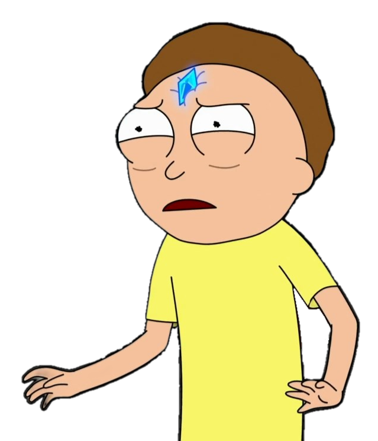

Starting FEN position:
Who should be better
(?)
White
Black
Max depth
(?)
:
Top move count (For the one that should be better)
(?)
:
Top move count for the one that should be "trapped"
(?)
:
Usage threshold
(?)
:
Trap treshold
(?)
:
Master database
(?)
Nope, Lichess DB
Master games only
0:
1000:
1200:
1400:
1600:
1800:
2000:
2200:
2500:
Ultra Bullet:
Bullet:
Blitz:
Rapid:
Classical:
Correspondence:
Search